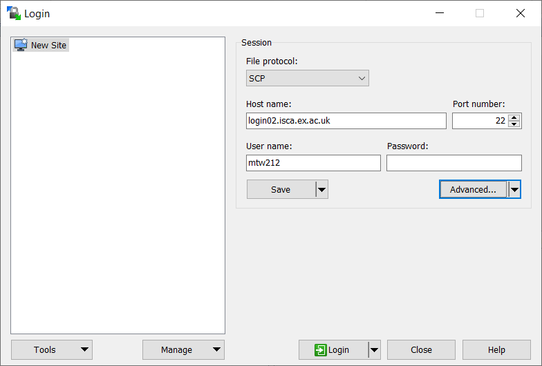
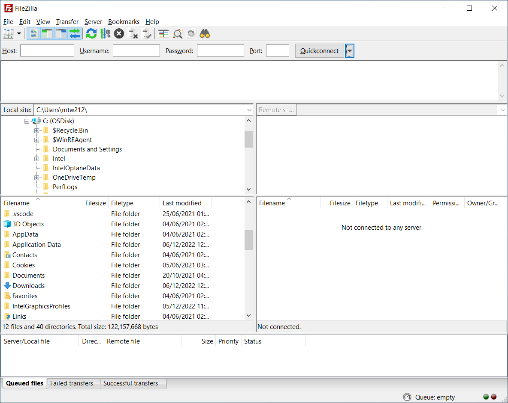

File Transfer Methods#
Learning Objectives#
At the end of this lesson you will be able to:
Use
wgetto download files from the WebTransfer files using
scp&rsyncUse a GUI interface to transfer files
Understand what other data transfer tools Exeter has available for large data transfers
From the Internet#
If the data is readily available on the internet, we can use the program wget to get files directly from webpages.
username@login02:~$ wget <http-address of file(s)>
As an example, let’s download the list of installed software modules on ISCA from the cluster’s webserver directly into our ISCA home directory.
wget -P $HOME 'http://login02.isca.ex.ac.uk:8080/modules.txt'
Open up the text file with your preferred text editor and peruse the contents. This info will be valuable in a later session when we talk about managing software libraries with modules and virtual environments.
Secure Copy#
The Command Line#
When we want to copy files back and forth from the cluster, the standard tool is scp, which leverages the same OpenSSH protocol as ssh. The syntax of scp mirrors that of the shell command cp
[you@laptop ~]$ scp <File Source> <Target Destination>
The three components of a remote machine path <username>@<hostname>:<filepath>
username: your login ID for that machinehostname: the remote address for the machinefilepath: the path to the file on the specified machine
While one can run scp commands from either the source or the target, if one is transfering to/from a personal machine, I would recommend running the commands there rather than on the server. Like when using ssh, scp will by default prompt you for your login password each time you run the command.
For example, to copy modules.txt from ISCA to the Downloads folder on your laptop, run this command on your laptop in either a Unix shell or Windows Powershell terminal, making sure to specify your own username.
[you@laptop ~]$ scp username@login02.isca.ex.ac.uk:~/modules.txt $HOME/Downloads
Question#
How would one copy modules.txt back from Downloads to our home directory on ISCA but with the new name modules_copy.txt?
Solution
scp $HOME/Downloads/modules.txt username@login02.isca.ex.ac.uk:~/modules_copy.txt
### More than one file
We so far have been focusing on single files, but like `cp`, `scp` can easily handle multiple files by utilizing wildcards.
``` bash
[you@laptop ~]$ scp $HOME/Downloads/*.txt username@login02.isca.ex.ac.uk:~/
If you want to copy not just a list of files but a full directory structure, one includes the -r (recursion) option in the scp command.
[you@laptop ~]$ scp -r username@login02.isca.ex.ac.uk:/lustre/projects/Research_Project-HPC-Training $HOME/Downloads
The command above copies the entire contents of the HPC-Training project directory into your downloads folder.
Larger files & Collections#
As you gain experience with transferring files, you may find the scp command limiting. The rsync utility provides advanced features for file transfer and is typically faster than scp. It is especially useful for transferring large and/or many files and creating synced backup folders.
The syntax is similar to scp. To transfer files &/or directories to another computer with commonly used options:
[you@laptop ~]$ rsync -avzP <source_filepath> <username>@<hostname>:<target_filepath>
The options are:
a(archive) - to preserve file timestamps and permissions among other thingsv(verbose) - to get verbose output to help monitor the transferz(compression) - to compress the file during transit to reduce size and transfer timeP(partial/progress) - to preserve partially transferred files in case of an interruption and also displays the progress of the transfer.
To download files, we simply change the source and destination:
[you@laptop ~]$ rsync -avzP <username>@<hostname>:<source_filepath> <target_filepath>
GUI-based tranfer apps#
There are a number of Graphical User Interface apps designed for transfering, two of which we can recommend are WinSCP and FileZilla. Both provide a side-by-side file explorer, with the left showing the local directory structure and the right showing the remote system.
WinSCP#
When starting up WinSCP, you will be prompted with a login window. The credentials are the same ones we used for Putty and like that program, you can save configuration for future use. Once logged into the remote server, one can navigate both directory structures like one would in Windows Explorer and copy files across with a simple drag & drop.


FileZilla#
FileZilla is another cross-platform client for downloading and uploading files to and from a remote computer. To connect to the cluster, enter your credentials at the top of the screen:
Host: sftp://login.isca.ex.ac.uk
User: Your cluster username
Password: Your cluster password
Port: (leave blank to use the default port)
Hit “Quickconnect” to connect. You should see your remote files appear on the right hand side of the screen. You can drag-and-drop files between the left (local) and right (remote) sides of the screen to transfer files.

Very Large Transfers#
Some research projects have VERY large datasets (think TBs) that may take hours/days to copy using the above tools. Because these sorts of transfer may have unforseen interruptions, we recommend using Globus to move files. While we don’t have time to cover it in this session, if you do have remote collaborators and a sizable data collection you would like moved onto campus, I recommend registering to use our Globus endpoint with your University of Exeter credentials here. We do hope to have this service connected directly up to ISCA in the new year.
For those who have bulk data in our Research Data Storage system, there is a set of commands that allows you to transfer that directly onto ISCA. Again, this material is outside our introductory course, but I wanted to bring it to your attention just the same.